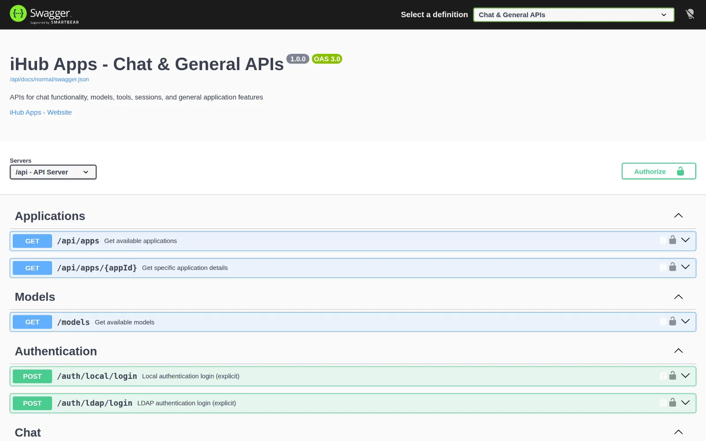
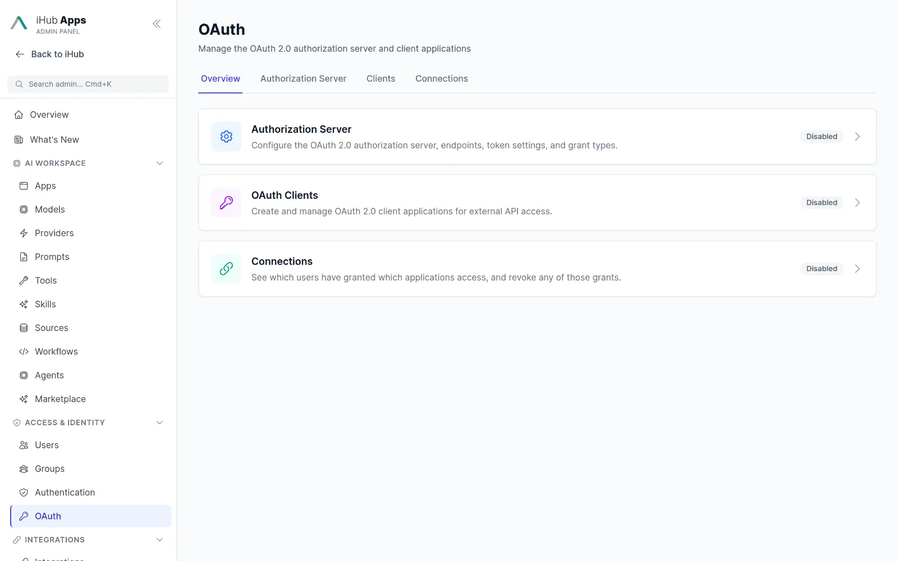

One API. All models. Your permissions.
Integrate every model your organization allows into your own applications with a single OpenAI-compatible API, governed by the same groups and audit trail as the chat.

Four surfaces for builders.
Inference API
OpenAI-compatible chat completions and model listing with streaming and tool calling. Works with the OpenAI SDKs, LangChain and LlamaIndex.
Learn more →Apps & runs API
Start app chats, workflows and agent runs, stream progress over SSE v2 with sequence numbers and reconnect, answer human-in-the-loop questions.
Learn more →MCP gateway
Expose apps, tools, workflows and resources to Claude, Cursor and VS Code behind OAuth 2.0 with dynamic client registration.
Learn more →OAuth 2.0 & OIDC provider
Client credentials, authorization code with PKCE, refresh tokens, introspection, JWKS. iHub can be the identity provider for your other tools.
Learn more →Drop-in for existing code.
Point your OpenAI client at iHub
Change the base URL and the key. Users see only the models their groups allow; every request is attributed, rate-limited and logged. Credentials can be a session token, an OAuth client, a static key or a personal API key.
import OpenAI from 'openai';
const client = new OpenAI({
baseURL: 'https://ihub.example.com/api/inference/v1',
apiKey: process.env.IHUB_PERSONAL_API_KEY
});
const stream = await client.chat.completions.create({
model: 'claude-sonnet-5',
stream: true,
messages: [{ role: 'user', content: 'Summarize this contract…' }]
});Personal API keys that act as the user
Users create keys in their profile. A key carries the user’s permissions, never admin rights, and can be revoked at any time. Ideal for scripts, Claude Code, Copilot or Codex style tools.

A real authorization server
Register OAuth clients, approve dynamically registered MCP clients with client metadata documents, manage consents and connections, and rotate signing keys. Discovery and JWKS endpoints make iHub an OIDC identity provider.

Swagger UI included
Three OpenAPI specifications are served by every installation: the public API, the admin API and the OpenAI-compatible API. Try requests directly from the browser.
Endpoint groups
| Group | What it does | Auth |
|---|---|---|
/api/inference/v1 | OpenAI-compatible /models and /chat/completions, streaming, tool calling | Session, OAuth client, static or personal key |
/api/apps, /api/chats | List apps, run app chats, stop, status, durable chat history | Session or personal key |
/api/runs | Run events, interactions, human answers for chats, workflows and agents | Session or personal key |
/api/workflows | Execute, trigger, versions, publish, stream, export, resume | Session, key or HMAC webhook |
/api/agents | Profiles, runs, artifacts, stream, resume, cancel | Session or key |
/api/models, /api/tools, /api/skills, /api/prompts | Catalogue endpoints filtered by permissions | Session or key |
/mcp | MCP gateway: tools, apps, workflows, resources | OAuth 2.0 with DCR |
/a2a | Agent-to-agent: agent/info, agent/skills, tasks/send (experimental) | OAuth 2.0 |
/api/admin/* | Everything the admin UI does, including migrations, backup and telemetry | Admin session |
/api/docs | Swagger UI with public, admin and OpenAI specs | Public |
Questions & answers
Which models are available through the API?
Every model configured in iHub and allowed for the calling user’s groups: OpenAI, Anthropic, Google, Mistral, AWS Bedrock, Azure OpenAI and local OpenAI-compatible servers.
Can I call an app instead of a raw model?
Yes. The apps API runs a full app chat with its prompt, tools and sources; the run API streams progress and lets you answer human-in-the-loop questions.
How do I authenticate?
With the user’s session or SSO token, an OAuth 2.0 client (client credentials or authorization code with PKCE), a static server key, or a personal API key created in the user profile.
Are there rate limits?
Yes, in six categories (default, admin, public, auth, OAuth, inference), configurable per deployment. Request concurrency towards providers is throttled as well.
Is there an embeddings endpoint?
Not yet. iHub focuses on inference, apps, workflows and agents; semantic retrieval is provided through iFinder and iAssistant.
The essential AI stack for your company.
Simple for business users. Ready for advanced use cases. Governed by IT.
Chat
Model-agnostic chat for everyone in the company.
Learn more →Apps
Ready-made AI assistants for recurring tasks.
Learn more →Workflows & Agents
Multi-step automation with human approval.
Learn more →Integrations
Tools, MCP, Outlook, browser, Nextcloud, Teams.
Learn more →Models
Every major provider plus local models.
Learn more →Run iHub Apps in 60 seconds.
One command installs the standalone binary. No Node.js, no Docker, no database. Open http://localhost:3000, add a model key, and your team has 24 AI apps.
curl -fsSL https://raw.githubusercontent.com/intrafind/ihub-apps/main/install.sh | sh